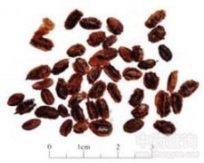

沙棘

拼音
Shā Jí
别名
醋柳果、醋刺柳、酸刺、黑刺、醋柳
来源
本品系蒙古族、藏族习用药材。为胡颓子科沙棘属植物沙棘Hippophae rhamnoides L. 的干燥成熟果实。秋、冬二季果实成熟或冻硬时采收，除去杂质，干燥或蒸后干燥。
生境分布
生于河边、高山、草原。产于华北、西北及四川、西藏。
药材特点
落叶灌木或乔木，高5～10m，具粗壮棘刺。枝幼时密被褐锈色鳞片。叶互生，线性或线状披针形，两端钝尖，下面密被淡白色鳞片；叶柄极短。花先叶开放，雌雄异株；短总状花序腋生于头年枝上；花小，淡黄色，雄花花被2裂，雄蕊4；雌花花被筒囊状，顶端2裂。果为肉质花被筒包围，近球形，橙黄色。花期3～4月，果期9～10月。
性状
本品呈类球形或扁球形，有的数个粘连，单个直径5～8mm。表面橙黄色或棕红色，皱缩，顶端有残存花柱，基部具短小果梗或果梗痕。果肉油润，质柔软。种子斜卵形，长约4mm,宽约2mm；表面褐色,有光泽，中间有一纵沟；种皮较硬，种仁乳白色，有油性。气微，味酸、涩。
性味
酸、涩，温。
功能主治
止咳祛痰，消食化滞，活血散瘀。用于咳嗽痰多，消化不良，食积腹痛，瘀血经闭，跌扑瘀肿。
用法用量
3～9g。
化学成分
含异鼠李素（isorhamnetin）、异鼠李素-3-B-D-葡萄糖甙（isorhamnetin-3-B-D-glucoside）、异鼠李素-3-B-芸香糖甙（isorhamnetin-3-B-rutinoside）、槲角素及山奈酚的低糖甙（oligosides）。
药理作用
1：无药理作用数据
摘录
《中国药典》